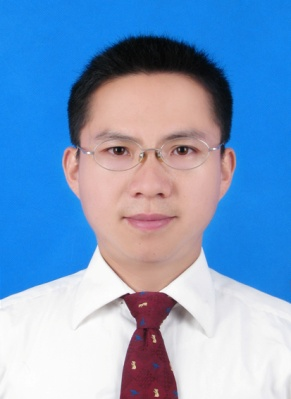

张兆强，男，1981年12月生，重庆永川人，副教授，在读博士。2000.09 -2004.07长安大学建筑工程专业获学士学位，2004.09-2007.07长安大学结构工程专业获工学硕士学位，2007.07-至今 担任西南科技大学专任教师。从事土木工程领域的教学与科研工作。
主要研究方向:强度理论的应用、钢-混凝土组合结构
E-mail：52282843@qq.com 传真及电话：0816-2419256
通信地址：四川省绵阳市西南科技大学土木工程与建筑学院（621010）
教学工作:
主要担任《结构力学》、《砌体结构》、《钢筋混凝土结构设计原理》以及毕业设计、毕业实习等专业主干课程和实践环节的教学与指导工作，教学效果良好。目前，参研住建部土建类高等教育教改项目和四川省教育厅教改项目各1项，主持校级教改项目2项，发表教改论文3篇。
科研工作:
积极致力于统一强度理论的应用和钢-混凝土组合结构方面的研究工作，先后主持国家自然科学基金青年基金项目1项，省教育厅项目2项，市科技计划项目1项，参研国家863计划、省科技厅以及企事业委托等纵横向项目20余项，在《长安大学学报》、《工业建筑》、《世界地震工程》、《建筑科学》等期刊上发表论文20余篇，其中被EI检索6篇，作为主要发明人获发明专利4项。
优秀成果:
近年来，获得了四川省土木建筑学会优秀论文二等奖、学校“优秀教学质量奖”、“优秀教学奖”（一等奖2次，二等奖1次）、优秀教师和优秀共产党员等奖励和荣誉称号，指导学生获得了首届四川省结构设计竞赛三等奖、四川省土木建筑学会第三届土木建筑类学生优秀设计三等奖，并获评西南科技大学学生科技活动优秀指导教师。